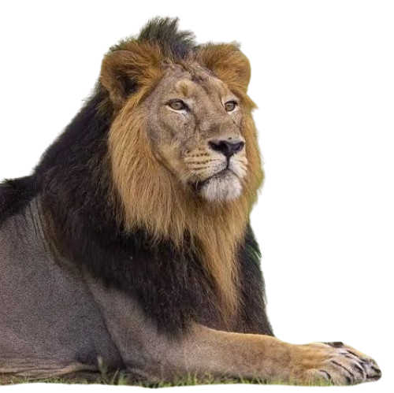
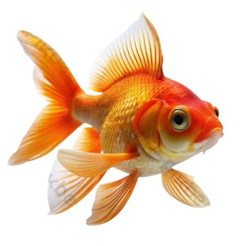
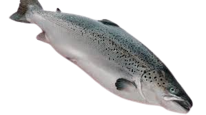

אריה (שם מדעי: Panthera leo) הוא מין של טורף גדול מהסוג פנתר שבמשפחת החתוליים, והוא השני בגודלו בין בני הקבוצה דמויי חתול, אחרי תת-המין הסיבירי של הטיגריס.
פיל הוא מונח לקבוצה פוליפילטית של שלושה מיני יונקים – פיל סוואנה אפריקני, פיל יער אפריקני ופיל אסייתי – שהם חיות היבשה הגדולות ביותר בעולם והמינים היחידים ששרדו במשפחת הפיליים. בעבר היו מינים נוספים ממשפחה זו, ביניהם הממותה, הפלאולוקסודון והסטגוטטרבלודון שאינם נחשבים לפילים רגילים.
.png)
סוס הבית (שם מדעי: Equus ferus caballus או גם Equus caballus caballus הוא בעל חיים מבוית ממחלקת היונקים, תת-מין של סוס הבר ממשפחת הסוסיים. הסוס התפתח במהלך 45 עד 55 מיליון השנים האחרונות מיצור קטן מרובה אצבעות, קרוב לאיוהיפוס, לחיה הגדולה, בעלת האצבעות של ימינו. בני אדם החלו לביית סוסים בסביבות 4000 לפנה"ס, והאב הקדמון של סוס הבית היה כנראה הטרפן שרעה בערבות אסיה ואירופה בתקופה בה בוית הסוס.
.png)
תרנגול הבית (שם מדעי: Gallus gallus domesticus) הוא עוף מבוית, הנפוץ ביותר מבין בעלי־החיים המבויתים ומבין כלל העופות על פני כדור הארץ.
.png)
ארנבים הם קבוצה לא-טקסונומית של יונקים קטנים ממשפחת הארנביים (Leporidae) שבסדרה ארנבאים הכוללת מספר סוגים. מתוך אחד עשר סוגים במשפחת הארנביים, שמונה מכונים ארנבים, ושלושת הסוגים האחרים (ארנבת, ארנב אסמי וארנבון אדום) מכונים "ארנבות".
.png)
צלופחאים (שם מדעי: Anguilliformes), היא סדרה של דגים מאורכים ומעוגלים הדומים לנחש.
.png)
הדולפינים הם קבוצה פרפילטית (לא טקסונומית) של יונקים ימיים השייכים לסדרת הלווייתנאים (Cetacea), ולתת-סדרה לווייתני שיניים. הם מתחלקים לשתי על-משפחות: דולפינים ובה משפחת דולפינים יחידה – דולפיניים (אך ישנם גם פוקניים וחדשיניים, שאינם נחשבים דולפיניים), ודולפיני נהרות, ובה ארבע משפחות קטנות ומיוחדות.
.png)
דג זהב או קָרַס זָהָב (שם מדעי: Carassius auratus) הוא דג ממשפחת הקרפיוניים (Cyprinidae) החי במים מתוקים. דג זה בוית למספר זנים ונפוץ כחיית מחמד באקווריומים ובבריכות נוי. דגי זהב יכולים להגיע לגודל של 45–60 ס"מ בבגרותם.
אִלְתִּית, או באנגלית סַלְמוֹן (Salmon), הוא שם כולל למספר מיני דגי מאכל, המשתייכים למשפחת הסלמוניים. מין אחד משתייך לסוג אלתית, ומקורו באוקיינוס האטלנטי, ושאר המינים משתייכים לסוג אלתית פסיפית, ומקורם באוקיינוס השקט. ניתן גם למצוא דגים אלו בימות הגדולות ובימות אחרות.
דיונון (שם מדעי: Sepia) הוא סוג של רכיכה ממשפחת הדיונוניים שבסדרת הדיונונאים, המכיל כמה מהמינים הידועים והשכיחים ביותר והוא הסוג הגדול ביותר במשפחה זו. עצם התיל בצורת אליפסואיד יחסית. שם הסוג הוא הצורה הלטינית של המילה היוונית לדיונון, σηπία (sēpía).
.png)
בּיזוֹן (שם מדעי: Bison) הוא סוג של בקר ממשפחת הפריים בעלי רעמה גבוהה וקרניים רחבות. כיום ישנם שני מיני ביזונים, אך בעבר היו מינים נוספים.
.png)
פלמינגו (שם מדעי: Phoenicopterus; בעברית שקיטן) הוא סוג של עופות מים ממשפחת הפלמינגואיים המכיל 3 מינים. בעבר כל מיני המשפחה נכללו בסוג זה אך המין פלמינגו זוטר עבר לסוג ומין יחיד - Phoeniconaias. המינים פלמינגו האנדים ופלמינגו ג'יימס עברו לסוג פלמינגו צהוב-מקור (Phoenicoparrus).
.png)